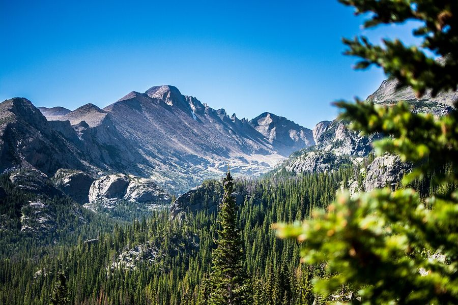
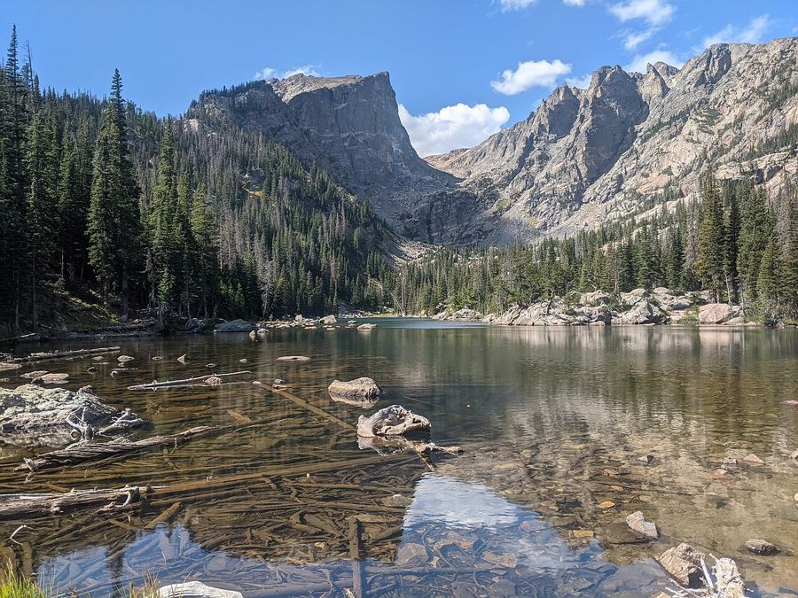
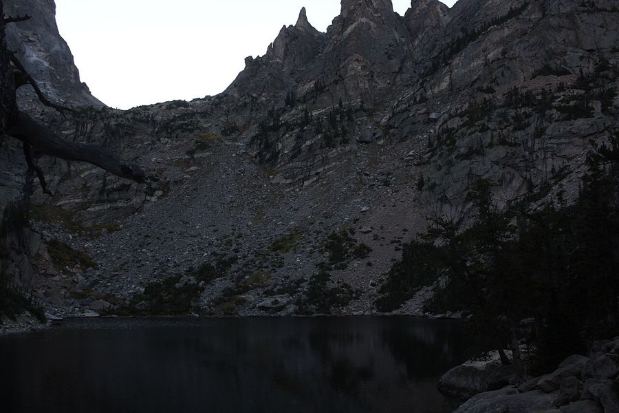

The route starts at Bear Lake, about 9,450 feet up in Rocky Mountain National Park.
Photo: Peter Pryharski epicpeter · CC0 · Wikimedia Commons

The trail passes Nymph Lake and then Dream Lake, with Hallett Peak above.
Photo: Thcipriani · CC BY-SA 4.0 · Wikimedia Commons

You have reached Emerald Lake, tucked under the cliffs of Hallett Peak.
Photo: Nicolas Henderson from Coppell, Texas · CC BY 2.0 · Wikimedia Commons